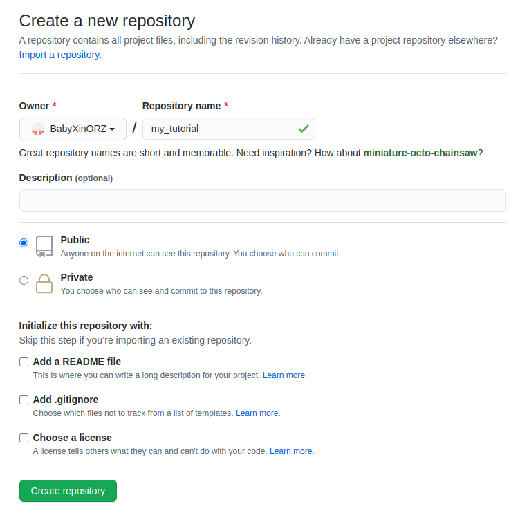

git
git基础入门
参考文章: 1. Git教程 | 菜鸟教程 2. Git五分钟教程 | 菜鸟教程
Introduction
Git is a free and open source distributed version control system designed to handle everything from small to very large projects with speed and efficiency.
Git 是一个开源的分布式版本控制系统，用于敏捷高效地处理任何或小或大的项目。
Git是Linus Torvalds (linux系统创始者)为了帮助管理 Linux 内核开发而开发的一个开放源码的版本控制软件。
用我的话说, git就是一个用于上传/下载代码, 多分支管理的命令行工具.
Git wrok flow

来自[Git 工作流程|菜鸟教程](https://www.runoob.com/git/git-workflow.html\)
Git server
现在主流的Git服务器有github,gitlab,gitee
这次我们主要学习github的使用.
create an account
邮箱尽量用qq邮箱吧,学校邮箱可能有问题.
create an repository
按照下图的选择新建项目

submit a piece of code
在一个合适的路径下打开命令行,运行以下命令:
echo "# my_tutorial" >> README.md
git init
git add README.md
git commit -m "first commit"
git branch -M master
git remote add origin git@github.com:BabyXinORZ/my_tutorial.git
git push -u origin master
Code Part
在Repository的Code中,可以自由查看项目中的文件.当打开一个新的文件夹时,会默认渲染文件夹下的Readme.md文件.
Branch
以OpenCV为例, 左上角有一个分支切换的下拉菜单,可以自由切换分支. (可见OpenCV的版本有master/2.4/3.4)
分支可以理解为版本,当需要实现新的功能/修补一个BUG而不想影响现有的代码时,可以新建分支来实现.
同时项目的管理者可以自由切换默认分支.(一般默认分支是master)
Release
发行版(Release)的位置在Code目录的右侧.Release里面包含了这个项目的从旧到新的所有版本,还包括测试版. 里面一般有编译好的二进制文件或者安装包文件,可以直接使用.
Issue
在Issue中,可以发布任务,提出BUG,提出需求.同时,当使用其他项目遇到不会解决的问题时,可以在issue中寻找类似情况或者自行提交issue.
General work flow
一般工作时,我们的工作流程主要是:
新建项目测试demo->根据demo数据需求定制接口并提交到issue->新建分支,上传修改代码->合并分支至主分支
Common commands
git init
功能: 创建新的 git 仓库。会在你的执行目录下新建一个.git文件夹.(使用命令ls -a可以查看到)
使用场景: 当你想要上传已有的代码至一个新的repository时, 需要使用此命令.
git config
功能: 配置一些文件
使用场景: 当你想要调整一些库的配置时,需要使用此命令.
使用范例
git config user.name --global "BabyXin"
# 将git的用户名设置为"BabyXin"
git config user.email --global "1635639396@qq.com"
# 将git的邮箱设置为"1635639396@qq.com"
以上两个命令是用于全局配置上传代码的用户信息,这两个命令对于一个电脑来说仅需要配置一次.如果是有多个用户用一台电脑,则不能使用--global词条,在每个项目中都需要配置对应的帐号与邮箱.
git clone(Compulsory)
git add(Compulsory)
git commit(Compulsory)
git push(Compulsory)
git remote(Compulsory)
git branch(Optional)
git checkout(Optional)
Special files in repo
repo中常见的有以下三种特殊文件,分别有不同的功能
Readme.md(Compulsory)
可以理解为使用必读/说明书.用来解释当前文件夹下的一些东西.
打开github/gitlab/gitee的源代码的某个文件夹,会自动渲染显示那个文件夹下的Readme.md文件
.gitignroe(Compulsory)
.gitignore可以拆解为.git和ignore两个部分,这个文件是用来告诉git上传时忽略哪些文件的.
因为前面有一个.符号,所以这种文件在文件夹里是默认不显示的.
.gitignore相关规则可以参考Git Ignore基本用法 以及A collection of .gitignore templates
Licence(Optional)
知道有这个东西即可,不需要过多深入
Licences on github Github上如何添加 LICENSE 文件？
VSCode and Git(Compulsory)
修改代码->加号添加修改的文件->输入commmet->点击☑️commit->点击左下角切换分支->上传代码
SSH Key
使用SSH凭据可以无需密码进行一些git操作,参考链接:ubuntu 安装Git与配置SSH key